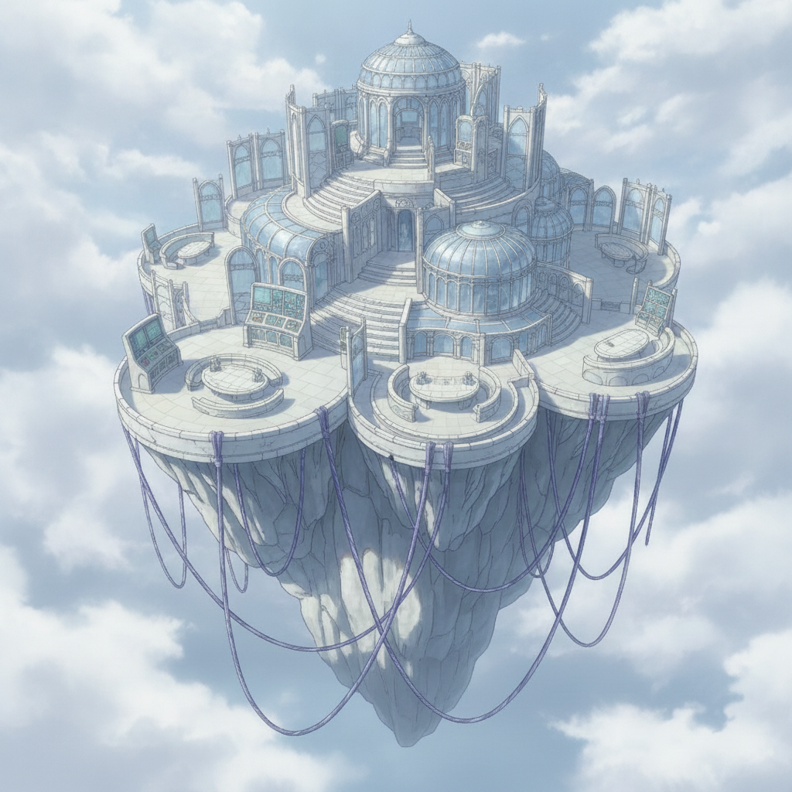
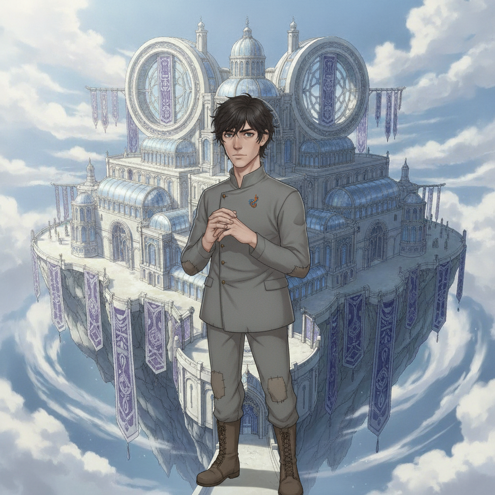
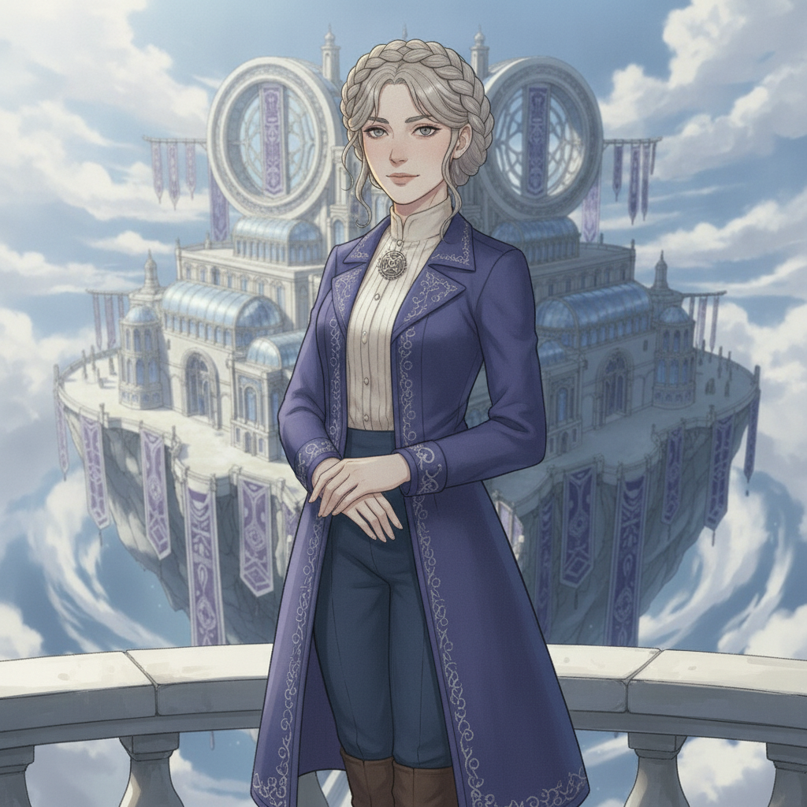

Halcyon Reach is bathed in soft, cloud-diffused silver light. The pale terraces and glass conservatories, once a place of tense diplomacy, now host a joyous celebration: our wedding.
Seraphine stands beside me, radiant. She has chosen her own thread, a path forged in conviction and action, not the one spun for her by treaties and court expectations.

Caedon Vale“You chose this, Seraphine. Your own truth. Not the peace they brokered, but the peace you fought for.”

Seraphine Halcyon“And in choosing, I found the only thread worth weaving. With you, Caedon. A chosen future.”
Among the allies she brokered, among the surviving pairs whose loyalty she earned, we exchange our vows. The end.